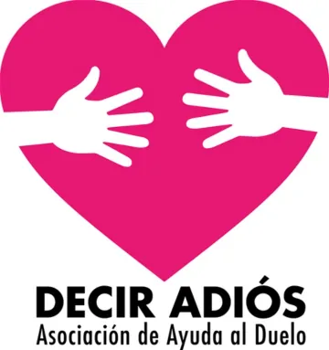

¿Qué es el duelo?
Es la respuesta emocional ante la pérdida de algo o alguien significativo: la muerte de un ser querido, una ruptura, la pérdida de un proyecto vital o un cambio importante en tu vida.
No hay una única forma de vivirlo ni un tiempo fijo. La terapia es útil cuando el dolor es muy intenso, se prolonga o interfiere en tu día a día.
Fases del duelo
No todas las personas pasan por todas las fases ni en el mismo orden: son una referencia, no un camino obligatorio.
- 1
Negación
Shock, incredulidad o desorientación.
- 2
Ira
Enfado o frustración hacia uno mismo, los demás o la situación.
- 3
Negociación
Los «¿y si…?» con los que intentamos dar sentido a lo ocurrido.
- 4
Tristeza
Soledad, vacío o apatía que pesan en el día a día.
- 5
Aceptación
Integrar la pérdida y seguir adelante con más serenidad, sin olvidar.
Emociones que pueden aparecer en el duelo
- Tristeza profunda
- Sensación de vacío
- Rabia o frustración
- Culpa o pensamientos repetitivos
- Dificultad para aceptar la pérdida
- Problemas de sueño o concentración
- Desconexión de la vida cotidiana
¿En qué consiste la terapia de duelo?
Es un espacio seguro y sin juicio para expresar y comprender lo que sientes, a tu ritmo.
-
1
Dar espacio a las emociones
Un espacio para expresar tu dolor sin juicios. -
2
Comprender el proceso
Normalizamos lo que te está pasando y por qué. -
3
Integrar la pérdida
Mantienes el vínculo sin que el dolor domine tu vida. -
4
Reconectar con el presente
Recuperas proyectos, relaciones y rutina.

Almudena Caro ha colaborado como psicóloga voluntaria en Decir Adiós, asociación de ayuda al duelo. El duelo es una de sus especialidades.
Quién te acompaña
Conoce a todo el equipo
Almudena Caro García
Colegiada M-35763 Duelo, dependencia emocional y bienestar emocionalEn la primera llamada te asignamos la profesional que mejor encaja con lo que necesitas.
Preguntas frecuentes
¿Tienes otra duda? Escríbenos por WhatsApp al 629 95 83 88.
¿Cuánto dura la terapia de duelo?
Depende de tus necesidades y de tus circunstancias. Lo valoramos juntos en la primera cita.
¿Cómo sé si necesito terapia?
Si te cuesta manejar las emociones o seguir con tu vida tras una pérdida importante, la terapia puede ayudarte.
¿Sirve si la pérdida fue hace muchos años?
Sí. El dolor puede reaparecer en fechas señaladas como cumpleaños, aniversarios o Navidad, y la terapia ayuda a manejarlo y a honrar a quien perdiste.
¿Y si no he perdido a un ser querido?
También ayuda ante otras pérdidas dolorosas: un trabajo, una relación o una mascota.
Pide tu primera cita gratuita en nuestro centro de Alcobendas
Si necesitas cualquier aclaración, escríbenos. Te respondemos en menos de 24 horas.